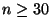
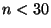
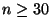
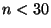

The sample size of a one variable data set is simply the number of measurements in that data
set. Many statistical procedures differ depending on whether there is a large sample or a
small sample. The central limit theorem which is a cornerstone of both applied
statistics and theoretical statistics says that many if not most populations can be approximated
for large sample size by a normal distribution. Hence if the sample is large enough the
normal distribution approximation can be used. Large enough here means just that the results
gets better as the sample size gets larger. In practice  is taken as the cutoff between
large and small samples. Thus a sample with  can be consiidered a large sample and the
normal approximation used while if  it is a small sample and different procedures (
depending on the population itself) must be used.
is taken as the cutoff between
large and small samples. Thus a sample with  can be consiidered a large sample and the
normal approximation used while if  it is a small sample and different procedures (
depending on the population itself) must be used.